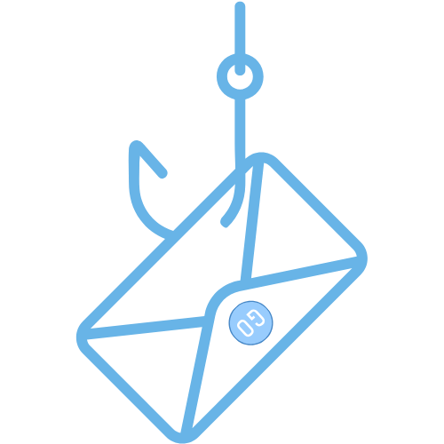

Chrome Extension Developer | 2025
Gone-Phishin
A Chrome extension that adds a Gmail scanning workflow for checking whether an email appears to be phishing.

Project Description
The extension adds a "Scan this Email" action inside Gmail and sends the selected email content to a local Flask API. The Python service uses the Google Gemini API to classify suspicious content and returns the result to the browser so users can assess an email before interacting with unsafe links or requests.
The repository also documents setup steps for installing dependencies, configuring the Gemini API key, running the local detector service, and loading the extension into Chrome developer mode.
Tech Stack
- Chrome extension frontend with JavaScript.
- Python phishing detector service.
- Flask local server.
- Google Gemini API for AI-assisted email analysis.
Extension-to-API Workflow
A Manifest V3 content script injects the scan action into Gmail, reads the open message and sender from the page, and sends a structured JSON request to a Flask service running on the user's machine. The service accepts either one email or a batch, then returns the message ID, sender, timestamp, normalized risk level, and a short set of warnings.
Gemini 2.0 Flash reviews the message's context, language, and sender signals. The backend converts the model response into risky, unsure, or none, which the extension presents as Scam, Unsure, or Legit in an in-page result dialog.
- Chrome storage, tab, scripting, and Gmail host permissions support the browser workflow.
- Flask-CORS allows the extension to call the local detector endpoint during development.
- The current prototype requires the Flask service and Gemini API key to be configured locally, and its Gmail DOM selectors may need maintenance as Gmail changes.